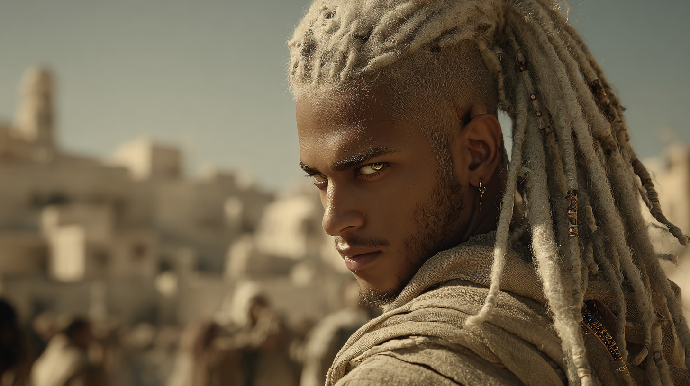
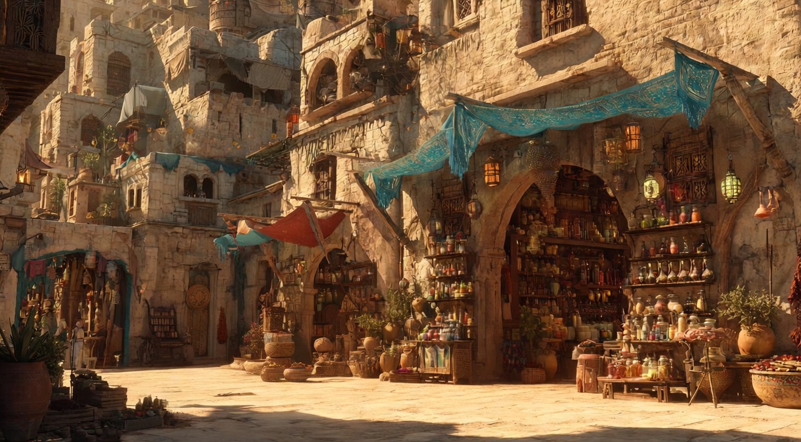
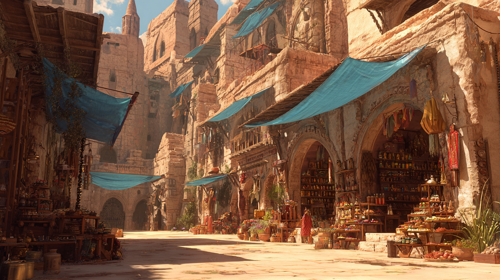
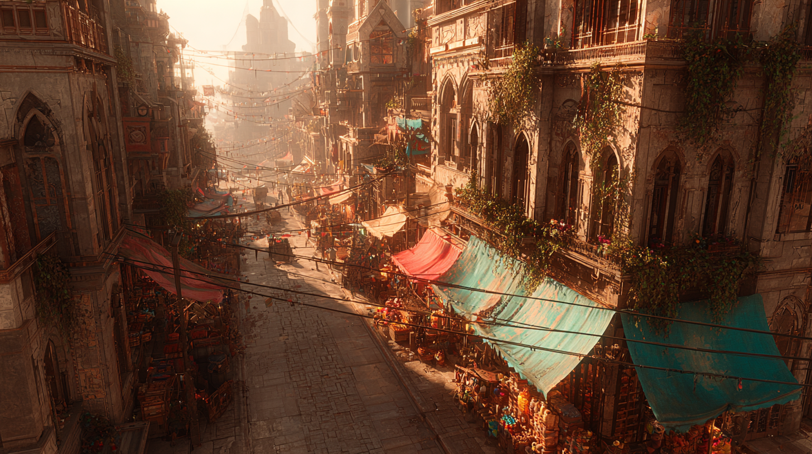
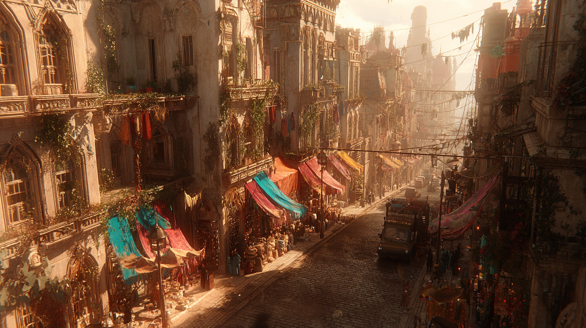
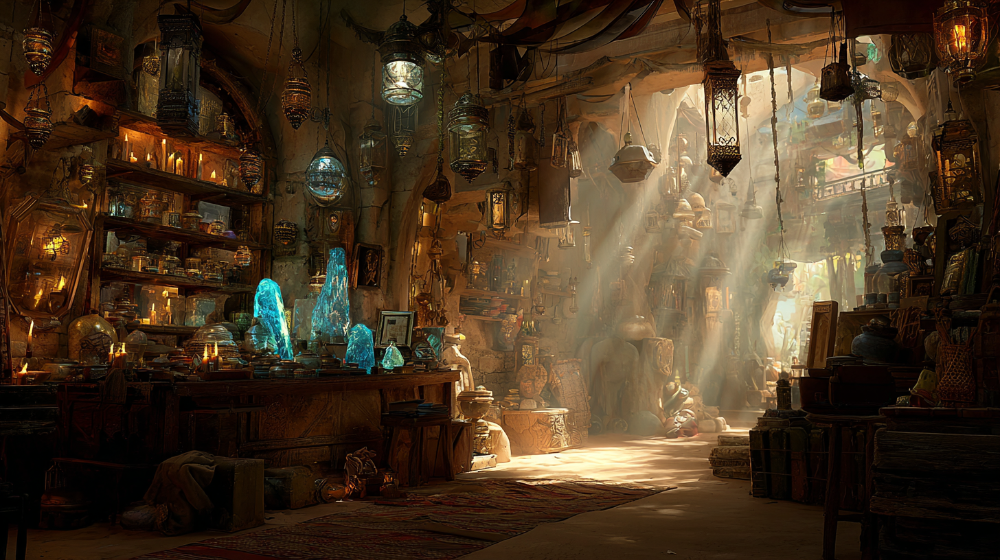
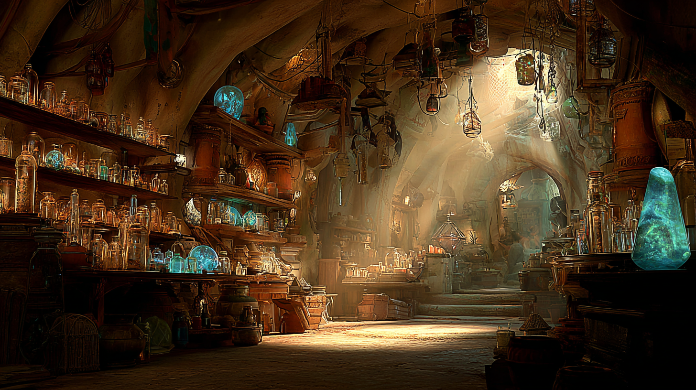

Building a world that doesn’t fall apart between shots
The Gilded Thief is a 4-minute fantasy action romance set in a North African desert city. Building consistent environments across multiple locations was the hardest thing I’d attempted in AI film. This is what I learned.
Updated June 2026
A thief, a hidden royal, a stolen magical orb, and a rooftop that nearly broke me. Watch first, then read the chaos that went into making it.
Six acts, five locations, one very specific orb
I wrote a script before I generated a single frame. That discipline was the only reason this held together. The story moves through five distinct locations in under four minutes: a shop, a market street, a quiet alley, a rooftop, and the street below.
Act 1
The Shop
Kaelis arrives to collect his orb. Nyra’s already there. She takes it. He notices immediately. Leaves with only “Keep it” to the shopkeeper.
Act 2
The Market
Nyra moves through the crowd. Slips into a quiet alley. Examines the orb: she knows it’s valuable but not why. Kaelis appears. “Hello there.”
Act 3
The Confrontation
She denies everything. He’s not convinced. The tension is immediate. She tries charm as a weapon. He finds it more entertaining than threatening.
Act 4
The Fight
A scrappy fight sequence. Kaelis purely defensive. He pins her wrists. She admits she needs the orb. Stomps his foot and runs. He goes after her.
Act 5
The Rooftop
He corners her against the parapet. Charged silence. She kisses him. He almost kisses back. She breaks free. He catches only her bracelet. She steps backward off the edge.
Act 6
The Ending
She’s gone. No body. He sits on the parapet, turning her bracelet in his fingers. A guard arrives: “Did you get what you came for?” He answers: “Not yet. But I will soon.”
Two characters, one stolen orb, zero trust
Nyra
Female lead
A skilled professional thief in her mid-twenties. Wild black curly hair, fitted all-black robes, dark leather shoulder armour, black scarf. Moves in magical underground circles. Quick-witted, fearless, and very good at performing confidence even when she does not have it.

Kaelis
Male lead
A hidden royal travelling incognito. Known to Nyra only as Kade. White bleached dreadlocks, green eyes, cream and sand-tone desert robes. Formally trained in combat but goes entirely defensive in the fight. Quiet, composed, and far more entertained by her than he lets on.
Character reference sheets
Nyra (left) and Kaelis (right). Full turnaround sheets used as @character anchors in Kling.
Every location, before a single character was placed in it
I built the world completely in Midjourney before opening Kling. Every location, at every angle I thought I might need. It was the most front-loaded process I had used. It was also the most important decision I made on this project.
The market exterior
Built several versions at different distances and angles so the same location could be cut to from multiple camera positions without the world changing underneath the characters.


The elevated view
Getting a consistent elevated angle was harder than it looks. The city layout needs to feel coherent from above. You cannot just generate a bird’s eye shot from a street-level reference and expect it to match.


The alleyway
Needed to feel narrow, slightly claustrophobic, warm. It is where the first real confrontation happens. The lighting had to carry tension without relying on camera movement.
The rooftop
The most iterations of any environment. Needed a significant drop visible beyond the parapet and the whole city skyline behind it. Getting the scale right so the height felt genuinely dangerous took multiple rounds in Midjourney.
The shop interiors
Warm amber lanterns, shelves of glowing artefacts. The cyan glow of the orb needed to read clearly against all of it, which shaped the colour decisions early on.


Nothing was abbreviated. Everything was described, every time.
Kling has no memory of your previous generation. Every prompt starts from scratch. That means every prompt needs to contain everything: character appearance, environment details, lighting, camera position, ambient sound, what is and is not in frame. Shorthand breaks the consistency.
Kaelis entering the shop
@Kaelis walks slowly through the arched stone entrance of an ancient North African antiquities shop. Warm amber lantern light. Stone floor. Wooden shelves lined with artefacts and glass jars. A large broad-shouldered bald Black man in a long white robe stands behind a wooden counter. Camera follows at medium distance. No dialogue. No music. No other characters visible. 24fps, cinematic, photorealistic.
Nyra examining the orb in the alley
@Nyra stands alone in a narrow North African stone alleyway. Golden afternoon light from above. She holds @Orb in both cupped palms, no larger than a tennis ball, sitting completely within her hands, swirling cyan energy inside. She examines it with curiosity, turning it slowly. Slight ambient crowd noise off-screen. No dialogue. No music. 24fps, cinematic, photorealistic.
The rooftop final moments
@Kaelis stands on a large open stone rooftop terrace. Wide shot. City skyline visible in distance below the parapet, significant drop visible. Warm golden sunset light. He walks slowly to the parapet edge and looks out over the city. Sits on the edge, feet dangling. He turns a small leather bracelet with a silver symbol between his fingers. No dialogue. No music. 24fps, cinematic, photorealistic.
World first. Everything else after.
I had been building scenes around characters: design the person, then figure out where to put them. Flipping that order, world first, was the single biggest change I made to my workflow. By the time I generated the first character shot, every location already existed at every angle I needed. There were no surprises in Kling.
The pipeline above is the working one. Every step is active and in that order. Skipping or reordering any stage caused problems that were expensive to fix later.
Six things I would tell myself at the start
01
Environment before character
Build your world completely in Midjourney before you touch Kling. Every location, every angle you will need. Characters go into a finished world, not the other way around.
02
Putting two leads in a scene and having them say nothing is a pain in the butt!
Kling will keep attemptin to generate dialogue between them. It will be gibberish. I had to explicitly tell it multiple times that they are not talking. Even then results were mixed.
03
Start frame to end frame continuity
Using the end frame of one shot as the start frame of the next was the single biggest improvement to visual consistency. The tradeoff is slight environmental drift between shots. Choosing your poison is part of it.
04
Describe everything, every time
Background characters, ambient crowd, lighting direction, camera position. No shorthand. Kling has no memory of your previous prompt. Every generation starts from zero.
05
Keep the orb specific
“No larger than a tennis ball, sitting completely within one cupped palm.” Every single prompt. The moment you get vague about prop size, it drifts.
06
Complexity is the enemy of consistency
The more detailed and layered a scene, the harder it is to replicate. The rooftop required the most iterations. It was also the most complex.
What I used and what each one did
Kling AI 3.0 Omni
Video generation and character animation. Used for all motion: character scenes, environment shots, the fight sequence and the rooftop finale.
Midjourney
Environment and world asset creation. Every location reference image was built here before going anywhere near video generation.
Grok / Aurora
Character reference sheets. Used to build the turnaround sheets for Nyra and Kaelis that were passed as @character anchors into Kling.
DaVinci Resolve
Editing, sound design and colour grade. The film came together here: cutting between characters, pacing the fight, laying in the score and the ambient city sound.